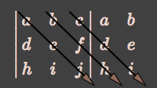
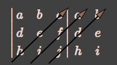

| « 10.3 | up | 10.5 » |
10.4 — Systems of Linear Equations — Determinants
The determinant is a function which takes a square matrix and produces a single number. We will only look at the determinant of $2 \times 2$ and $3 \times 3$ matrices.The determinant of a matrix $A$ is in general denoted by $$\det(A)$$ The determinant is often denoted by writing the matrix in straight brackets (instead of the normal square brackets). For instance, if $A$ is $2 \times 2$ $$\det(A) = \begin{vmatrix} a_{11} & a_{12} \\ a_{21} & a_{22} \end{vmatrix}$$ or if $A$ is $3 \times 3$ $$\det(A) = \begin{vmatrix} a_{11} & a_{12} & a_{13} \\ a_{21} & a_{22} & a_{23} \\ a_{31} & a_{32} & a_{33} \end{vmatrix}$$
Determinant of a $2 \times 2$ Matrix
Let $A$ be a $2 \times 2$ matrix: $$ A = \begin{bmatrix} a & b \\ c & d \end{bmatrix} $$ Then the determinant is defined as $$ \det(A) = \begin{vmatrix} a & b \\ c & d \end{vmatrix} = ad - bc $$
Find the determinant of $A = \begin{bmatrix} -4 & 7 \\ 2 & -3 \end{bmatrix}$.
$-2$
Compute $\begin{vmatrix} -x & -9 \\ 4 & x \end{vmatrix}$.
$-x^2 - 36$
Determinant of a $3 \times 3$ Matrix
Let $A$ be a $3 \times 3$ matrix: $$ A= \begin{bmatrix} a & b & c\\ d & e & f\\ h & i & j \end{bmatrix} $$ Then the determinant is given by: $$ \det(A) = aej + bfh + cdi - (hec + ifa + jdb) $$ This is found by the following procedure:First stack up the first two columns of the matrix at the end, like so: $$ \begin{vmatrix} a & b & c\\ d & e & f\\ h & i & j \end{vmatrix} \begin{array}{cc} a & b \\ d & e \\ h & i \end{array} $$ Next, start at the top row of the original matrix and draw an arrow to the right and down. This arrow will pass through three elements. Multiply elements within a single arrow and add all the results. So the first arrow passes through $a,e,j$, the second arrow starts at $b$ and passes through $b,f,h$, and the third arrow starts at $c$ and passes through $c,d,i$.

This gives $aej + bfh + cdi$. Now we do this again but take the arrows starting from the bottom:

This gives $hec + ifa + jdb$. The determinant is given by taking the "top-down arrows" result and subtracting the "bottom-up arrows" result. That is, $$ \det(A) = aej + bfh + cdi - (hec + ifa + jdb) $$
Compute
$$
\begin{vmatrix}
1 & 2 & -2\\
3x& 2 & y \\
1 & 0 & -2
\end{vmatrix}
$$
$2y+12x$
Compute $\det(A)$ if
$$
A =
\begin{bmatrix}
1 & 2 & -1 \\
2 & -1 & -2 \\
-x & 3 & 2y
\end{bmatrix}
$$
$5x - 10y$
Cramer's Rule for Solving 2-D Linear Systems
Consider the linear system: \begin{align*} ax + by &= s \\ cx + dy &= t \end{align*} Let $C$ be the coefficient matrix, $$ C = \begin{bmatrix} a & b \\ c & d \end{bmatrix} $$ Now call $C_x$ and $C_y$ the matrices resulting from replacing the first or second column respectively of $C$ with the right-hand-side of the system. That is, $$ C_x = \begin{bmatrix} s & b \\ t & d \end{bmatrix} $$ and $$ C_y = \begin{bmatrix} a & s \\ c & t \end{bmatrix} $$Cramer's Rule says that the solution to the original linear system is given by: $$ x = \frac{|C_x|}{|C|}, \;\;\;\; y = \frac{|C_y|}{|C|} $$
Use Cramer's rule to find the solution of:
\begin{align*}
x + y &= 1 \\
x - y &= 1
\end{align*}
$x = 1$, $y = 0$
Cramer's Rule for Solving 3-D Linear Systems
Cramer's Rule extends naturally to 3-D systems. The solution now is given by: $$ x = \frac{|C_x|}{|C|}, \;\;\;\; y = \frac{|C_y|}{|C|}, \;\;\;\; z = \frac{|C_z|}{|C|} $$ where the matrices $C, C_x, C_y, C_z$ are defined analogously to before.
Determine the $z$ component of the solution for the system:
\begin{align*}
x + 4y - 2z = 0 \\
3x - 2y + 3z = 4 \\
2x + y - 3z = -1
\end{align*}
if
$
A =
\begin{vmatrix}
0 & 4 & -2 \\
4 & -2 & 3 \\
-1 & 1 & -3
\end{vmatrix}
$
,
$
B =
\begin{vmatrix}
1 & 0 & -2 \\
3 & 4 & 3 \\
2 & -1 & -3
\end{vmatrix}
$
,
$
C =
\begin{vmatrix}
1 & 4 & 0 \\
3 & -2 & 4 \\
2 & 1 & -1
\end{vmatrix}
$
,
$
D =
\begin{vmatrix}
1 & 4 & -2 \\
3 & -2 & 3 \\
2 & 1 & -3
\end{vmatrix}
$
$z=C/D$
Given that $\begin{vmatrix} -1 & -1 & -2 \\ 3 & 4 & 3 \\ -2 & 1 & -1 \end{vmatrix} = 12$, use Cramer's Rule to find the $z$ component of the following system:
\begin{align*} -x -y -2z &= 9 \\ 3x + 4y + 3z &= -18 \\ -2x + y - z &= -3 \end{align*}
\begin{align*} -x -y -2z &= 9 \\ 3x + 4y + 3z &= -18 \\ -2x + y - z &= -3 \end{align*}
$z=-4$
Row Operations and the Determinant
Recall our notations for admissible row operations for linear systems. They affect the value of the determinant of the coefficient matrix in the following way:- $r_i \leftrightarrow r_j$ — determinant changes sign.
- $r_i \leftarrow \alpha r_i$, (for $\alpha \neq 0$) — determinant is multiplied by $\alpha$.
- $r_i \leftarrow \alpha r_i + \beta r_j$, (for $\alpha \neq 0, i \neq j$) — determinant is multiplied by $\alpha$.
- Row of all zeros — determinant is zero.
- Two or more rows the same — determinant is zero.
If $\begin{vmatrix} 1 & 2 & 3 \\ a & b & c \\ d & e & f \end{vmatrix} = 4$, then compute
$
\begin{vmatrix}
3a-1 & 3b-2 & 3c -3 \\
2d & 2e & 2f \\
-1 & -2 & -3
\end{vmatrix}
$.
$-24$